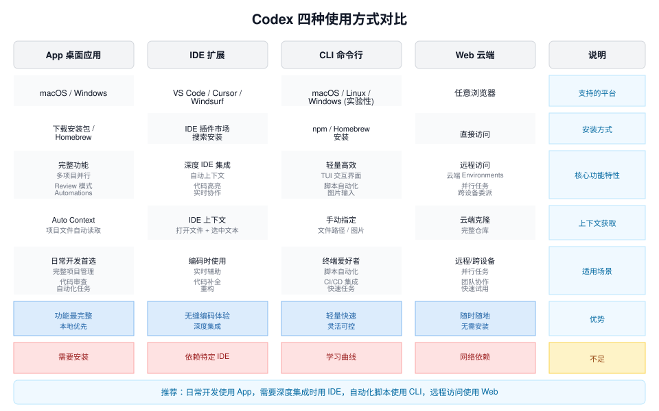

Codex インストールと使い方
Codex はさまざまな方法で使用でき、開発者の習慣に応じて、おおまかに5つの方法に分けられます：
| インストール方法 | 使用シーン | 推奨度 |
|---|---|---|
| Codex アプリ | Codex アプリを直接ダウンロード | ⭐⭐⭐⭐ |
| Codex CLI | ターミナルで使用 | ⭐⭐⭐⭐⭐ |
| IDE プラグイン | VS Code / Cursor で使用 | ⭐⭐⭐⭐ |
| Homebrew インストール | Mac ユーザー | ⭐⭐⭐⭐ |
| GitHub Release バイナリ | 手動インストール | ⭐⭐⭐ |

以下でそれぞれ紹介します。
1、Codex アプリ
最も簡単な方法はCodex アプリを直接使用することです、良好なネットワーク接続が必要です。
アクセス：https://chatgpt.com/zh-Hans-CN/download/
アプリをダウンロード：

ChatGPT アカウントにログインするだけで使用できます。
ChatGPT インターフェースの説明：


Codex モード：

その後、入力ボックスに要件を入力できます：

Codex のアクセスや使用に問題がある場合、中国国内の Alibaba（阿里）の Qoder Quest や ByteDance（字节）の Trae Solo も類似の製品です。
2、Codex CLI
開発者が最もよく使う方法はCodex CLI。
CLI はターミナルで動作する AI プログラミングエージェントで、以下のことができます：
- コードを読む
- コードを修正する
- シェルコマンドを実行する
- バグを自動修正する
Codex CLI はローカルで実行されるため、コードがクラウドにアップロードされることはなく、プロンプトと必要なコンテキストのみがモデルに送信されます。
Codex CLI をインストール
macOS/Linux ワンクリックインストールと更新：
curl -fsSL https://chatgpt.com/codex/install.sh | sh
Windows ワンクリックインストールと更新：
powershell -ExecutionPolicy ByPass -c "irm https://chatgpt.com/codex/install.ps1 | iex"npm を使用したインストールと更新：
npm install -g @openai/codex # 使用国内镜像安装更快 npm install -g @openai/codex --registry=https://registry.npmmirror.com
インストール完了後に実行：
codex
これで Codex を起動できます。
Codex にログイン
初回実行時はログインが必要です。
2つの方法があります：
方法1：ChatGPT ログイン（推奨）
codex
選択：
Sign in with ChatGPT
するとブラウザでログインページが開き、ログインが完了すれば使用できます。
方法2：API キー ログイン
開発者モードの場合は、API キーを使用できます：
# macOS / Linux - 临时设置（仅当前终端会话有效） export OPENAI_API_KEY="sk-你的API密钥" # 永久配置（添加到 ~/.bashrc 或 ~/.zshrc） echo 'export OPENAI_API_KEY="sk-你的API密钥"' >> ~/.zshrc source ~/.zshrc # Windows PowerShell $env:OPENAI_API_KEY="sk-你的API密钥" # 配置后启动（指定模型） codex --model gpt-5-codex
その後、実行：
codex
方法3：auth.json ファイルの設定
認証ファイルを手動で編集し、ディレクトリを作成：
mkdir -p ~/.codex
API キーを書き込む：
cat > ~/.codex/auth.json << 'EOF'
{
"OPENAI_API_KEY": "sk-你的API密钥"
}
EOF
Codex を初めて実行
プロジェクトディレクトリに移動：
cd my-project
Codex を起動：
codex
その後、入力：
現在のプロジェクト構造を分析してください
Codex は自動的に：
- コードベースをスキャン
- プロジェクト構造を分析
- システムアーキテクチャの説明を出力
例えば、ディレクトリを作成します：
mkdir codex-runoob-test
ディレクトリに移動：
cd codex-runoob-test
test.py ファイルを新規作成し、コードは次のとおりです：
print("Hello Runoob!")
Codex を起動：
codex
最初のものを選択Yes, continueEnter キーを押すと、Codex CLI を使ってコードを書き始めることができます：

Codex の3つの実行モード
Codex CLI は3つのセキュリティモードを提供します。
| モード | 機能 |
|---|---|
| Suggest | 変更のみ提案 |
| Auto Edit | ファイルを自動修正 |
| Full Auto | すべての操作を自動実行 |
デフォルトモード：
Suggest
モードの切り替え：
codex --auto-edit
または：
codex --full-auto
Full Auto モードはコード修正やタスクを自動実行できます。
更新とアンインストール
# 更新到最新版本 npm update -g @openai/codex # 或强制重装最新版 npm install -g @openai/codex@latest # 卸载 npm uninstall -g @openai/codex # Homebrew 卸载 brew uninstall --cask codex
3、Homebrew インストール（Mac 推奨）
Mac ユーザーは Homebrew を使用してインストールできます。
brew install --cask codex
インストール完了後に実行：
codex
これで起動できます。
この方法は以下のような場合に適しています：
- Mac 開発者
- Node.js をインストールしたくないユーザー。
GitHub Release インストール（バイナリ）
npm を使用したくない場合は、バイナリ版を直接ダウンロードすることもできます。
ダウンロード先：https://github.com/openai/codex/releases
一般的なバージョン：
Mac Apple Silicon：
codex-aarch64-apple-darwin.tar.gz
Mac Intel：
codex-x86_64-apple-darwin.tar.gz
Linux：
codex-x86_64-unknown-linux-musl.tar.gz
ダウンロード後に解凍：
tar -xzf codex-xxx.tar.gz
名前を変更：
mv codex-x86_64-unknown-linux-musl codex
PATH に追加：
sudo mv codex /usr/local/bin
その後、実行：
codex
これで使用できます。
5、IDE プラグインのインストール
Codex は IDE でも使用できます。例えば：
- VS Code
- Cursor
- Windsurf
- VS Code forks
インストール方法：
- 1. IDE プラグインマーケットを開く
- 2. 検索Codex
- 3. プラグインをインストール
- 4. ChatGPT アカウントにログイン

これで IDE 内で直接 Codex を使用できます。
例えば：
- コードを自動修正
- 関数を自動生成
- コードを自動リファクタリング
6、Codex の更新
Codex CLI の更新は非常に簡単です：
codex --upgrade
または：
npm update -g @openai/codex
codex --version
Codex CLI は現在対応しています：
| システム | サポート状況 |
|---|---|
| macOS | 完全サポート |
| Linux | 完全サポート |
| Windows | 実験的サポート（WSL 推奨） |